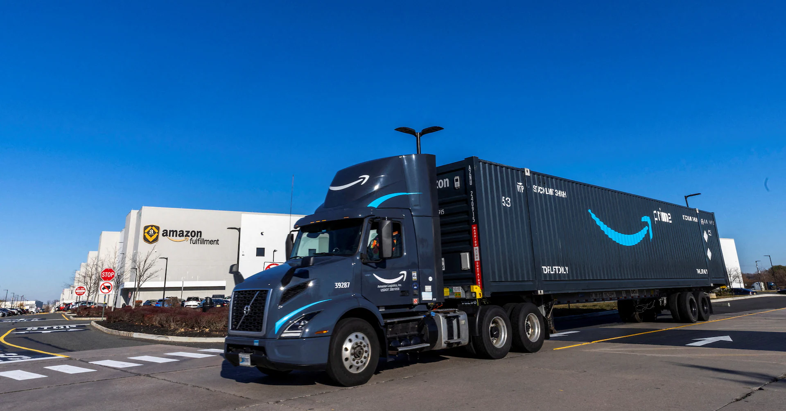
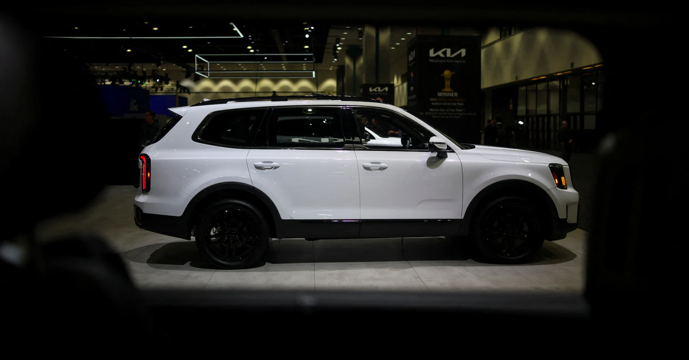
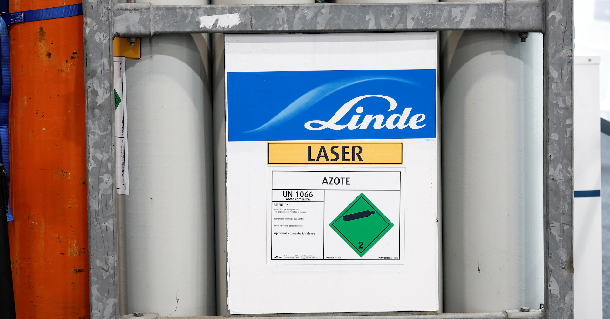
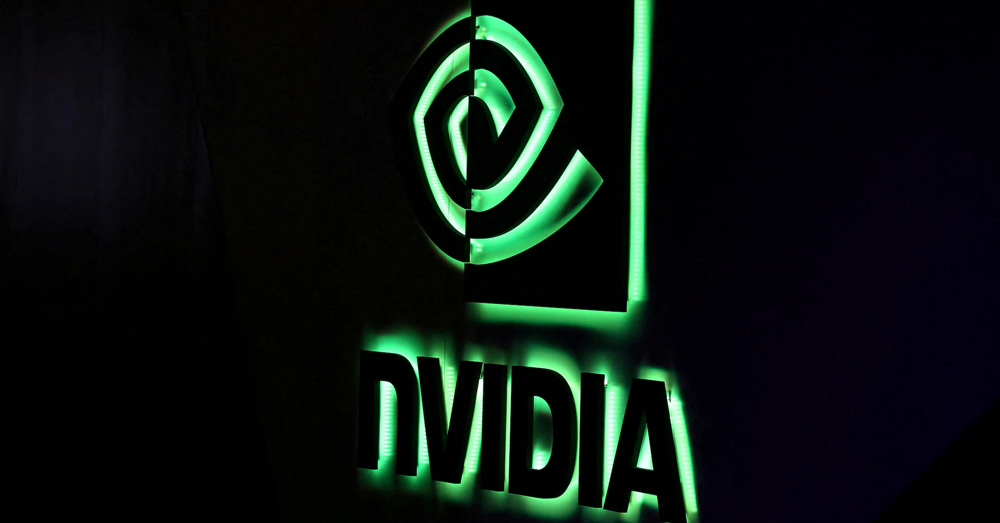
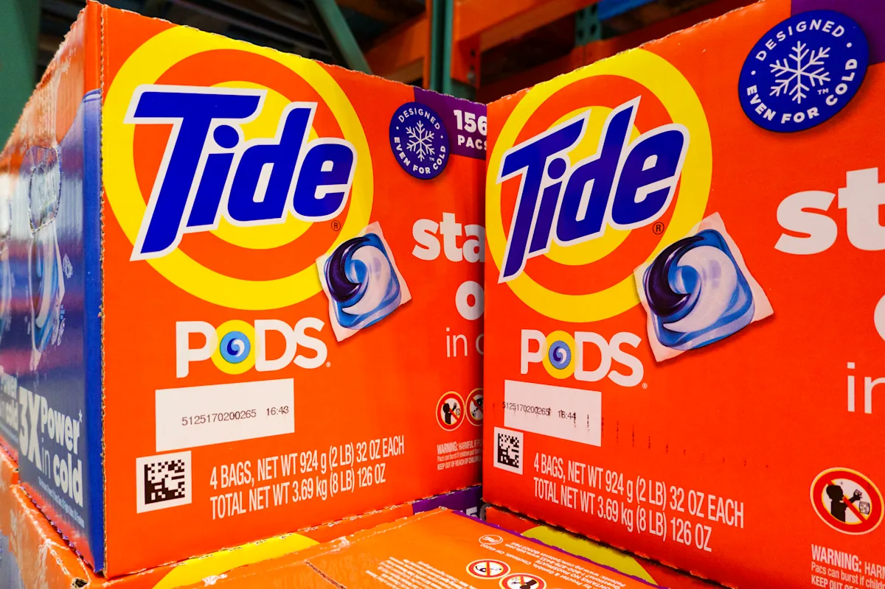
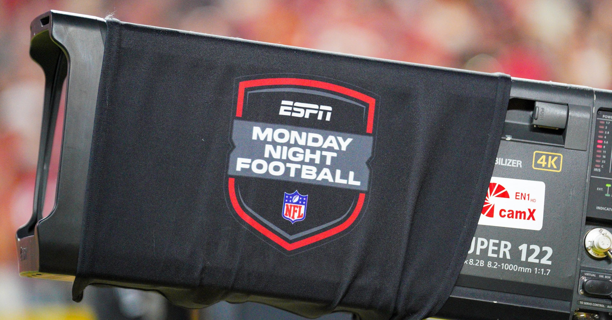

Waneye Financial Overview
Last updated: 2025-08-02 17:15 UTC
Financial Analysis Report
August 02, 2025 at 17:14Executive Summary
Key Highlights
- Amazon reports record Thanksgiving Holiday week sales, signaling strong consumer demand despite economic uncertainties.
- Blackstone sells largest UK CMBS since 2008, indicating renewed confidence in commercial real estate markets.
- Ford's US sales rise 9% in July, driven by SUV and pickup demand, highlighting resilience in the automotive sector.
- Coinbase shares sink due to trading weakness, reflecting volatility in the cryptocurrency market.
- Trump's new tariffs spark market sell-offs, with the Dow tumbling over 500 points.
- US job growth slows sharply in July, raising concerns about economic momentum.
- Big Tech earnings remain strong, providing some stability amid broader market turbulence.
- China cracks down on 'herd behavior' in emerging sectors, potentially cooling speculative investments.
Market Sentiment
Market Insights
Sector Analysis
Technology
Mixed performance with strong earnings from Big Tech but regulatory scrutiny and tariff impacts.
Investors should focus on companies with strong AI and cloud computing capabilities, but be wary of regulatory risks.Consumer Discretionary
Strong sales from Amazon and Ford indicate resilient consumer spending.
Sectors benefiting from consumer demand, such as e-commerce and automotive, may outperform.Financials
Market volatility boosts hedging activity, benefiting firms like Cboe.
Financial firms with strong derivatives and hedging services may see increased revenues.Healthcare
Mixed results with Moderna's patent win but Pfizer's appeal loss.
Biotech firms with strong pipelines may offer opportunities, but patent disputes remain a risk.Energy
Chevron beats profit estimates with record output, while OPEC+ agrees to supply increases.
Energy sector may benefit from stable oil prices, but geopolitical risks persist.Key Market Themes
- Tariff impacts on global trade
- Labor market weakness
- Big Tech earnings resilience
- Cryptocurrency market volatility
- Consumer spending resilience
- Regulatory scrutiny in tech and healthcare
Risk Assessment
Trade tensions and tariffs
Mitigation: Diversify portfolios to reduce exposure to tariff-sensitive sectors and consider hedging strategies.Labor market slowdown
Mitigation: Focus on sectors less dependent on labor-intensive operations, such as technology and automation.Regulatory scrutiny
Mitigation: Monitor regulatory developments and invest in companies with strong compliance frameworks.Cryptocurrency volatility
Mitigation: Limit exposure to crypto-related assets and consider stablecoins or diversified crypto funds.Strategic Recommendations
Investment Opportunities
Invest in Big Tech with strong AI and cloud computing capabilities.
medium-termCompanies like Amazon and Microsoft continue to show resilience and growth potential.
Consider consumer discretionary stocks benefiting from strong demand.
short-termFord and Amazon's performance indicates robust consumer spending.
Explore energy sector opportunities given stable oil prices.
medium-termChevron's record output and OPEC+ supply discipline support the sector.
Defensive Strategies
Reduce exposure to tariff-sensitive sectors.
short-termTrump's new tariffs are causing market volatility and could impact earnings.
Increase holdings in defensive sectors like utilities and healthcare.
medium-termThese sectors tend to perform well during economic uncertainty.
Monitor and potentially reduce crypto exposure.
short-termCoinbase's weak performance highlights ongoing volatility in the crypto market.
Market Outlook
Short-term Outlook (1-3 months)
1-3 month outlook: Expect continued volatility due to tariff impacts and labor market concerns, but strong earnings from Big Tech may provide some stability.
Long-term Outlook (6-12 months)
6-12 month outlook: Potential for recovery as trade tensions ease and labor market stabilizes, but regulatory and geopolitical risks remain.
Key Market Catalysts
- Upcoming Fed meetings and potential rate cuts
- Further developments in US-China trade relations
- Q3 earnings reports from major corporations
- Political developments ahead of the US election
Monitor Closely
- US job growth and unemployment rates
- Global trade and tariff announcements
- Big Tech earnings and regulatory actions
- Oil prices and OPEC+ decisions
- Cryptocurrency market trends










US Federal Reserve - Economy at a Glance
Policy Rates
- Federal Reserve: Rate not found
- European Central Bank: Rate not found
- Bank of England: Could not fetch rate (Request Error)
- Bank of Japan: Could not fetch rate (Request Error)
- Swiss National Bank: Could not fetch rate (Request Error)
- Bank of Canada: Rate not found
- Reserve Bank of Australia: 3.85%
- People's Bank of China: Rate not found
- Reserve Bank of New Zealand: Could not fetch rate (Request Error)
- US Nonfarm Payrolls: +250K (2025-05-20)
- Eurozone CPI: 2.1% YoY (2025-05-19)
| Pair | Bid | Ask |
|---|---|---|
| EUR/USD | 1.085 | 1.0852 |
| USD/JPY | 155.2 | 155.23 |